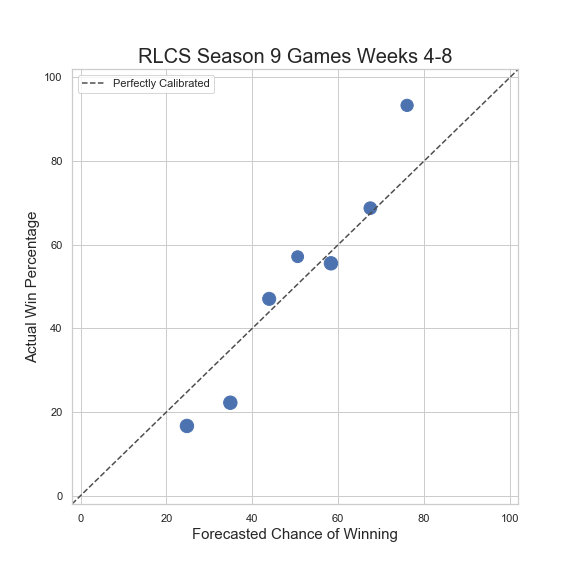

Description The forecasts above are based on 1,000 simulations for each game. I use Markov chain to simulate the events of each team and their opponent. Events could include shots, saves, passes, etc. I house the transition probabilities in a transition matrix. A transition probability is defined as the probability of an event occurring given a certain event has just occurred. For example, one transition probability would be the probability of team B saving the ball when team A shoots the ball. Transition matrices are constructed using play-by-play data from previous weeks. The model is rather simplistic and does not take into account things like momentum (which is an important factor to consider in Rocket League). Future work will take this into account as well as explore how similar certain teams are with the hope of increasing the accuracy of my forecasts. Predictions should become more accurate as the season goes on, thus we should get a more accurate picture of how teams behave. Future work will also include using priors to forecast games when there is little data about one or both of the teams. I also plan on evaluating my predictions in order to calibrate or even rework my model.
Lastly, I plan on ranking each team from NA and EU, giving them an SPI score, and offensive score, and a defensive score. I am not sure when I will get to all of this (as I am currently working and finishing up grad school) so don't hold your breath. Thanks for visiting!
Clich here to see how this model performs.
What good are predictions if we don't know how well our model performs? Anyone could come up with a model or algorithm that spit out probabilities, but not all predictions will be that accurate. So the next question is: how should we measure the accuracy of our model? One might think of finding the average number of matches I accurately predicted (where any event probability above .5 would be treated as a 1, and any event probability below .5 would be treated as a 0. Using this somewhat naive approach, I get an "accuracy" score of above 70%. However, this does not take into account the magnitude of the probabilities (for example, 52% chance of an event happening should not be treated the same way as a 74% chance of an event happening). It would be nice to keep this magnitude issue in mind when evaluating the model.
One way to address this issue is to bin the predictions I calculated using the model, and then compare them with the actual scores that have been realized. The following plot shows this:

My (binned) predictions looks promising. The closer the forecasted chance of winning to 50%, we see that the actual win percentage is fairly close to the forecasted chance of winning. I do want to note that I have only used the model on 1 partial season of RLCS. Thus, we will get a clearer picture at how "accurate" my model is once I have added more data to test the model. Another thing we can do is use a (modified) Brier Test. This will show us how much better (or worse) my model performs when compared with a baseline model. The higher the score, the better. The baseline model usually used is giving a 50% chance of an event occurring for every event or state. The following table shows how well our forecasts perform when compared to forecasts from fivethirtyeight.com of other sports:
| Forecasting Score | Sport |
| .0311 | MLB |
| .0696 | Club Soccer Matches |
| .0962 | NFL |
| .1296 | NBA |
| .1917 | World Cup (men) |
| .2035 | My RLCS Forecasts |
| .2502 | Tennis (women) |
| .2715 | World Cup (women) |
| .3135 | NFL Playoffs |
| .3228 | March Madness (men) |
| .3244 | Tennis (men) |
| .3604 | NBA Playoffs |
| .4568 | Club Soccer League |
| .4806 | MLB Playoffs |
| .5232 | March Madness (women) |